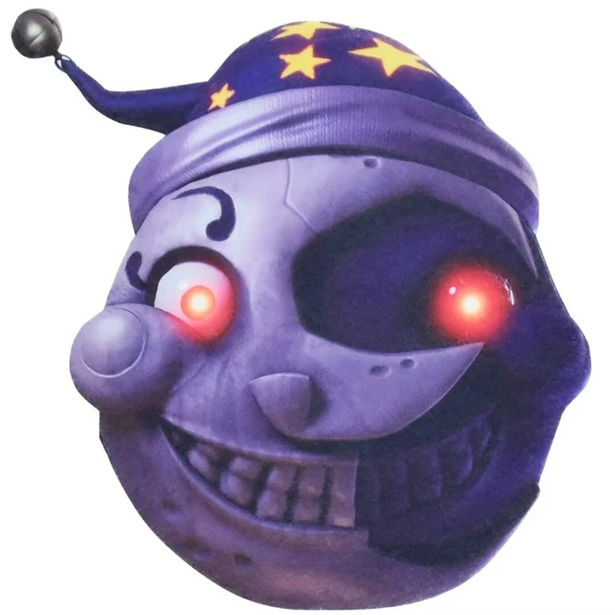
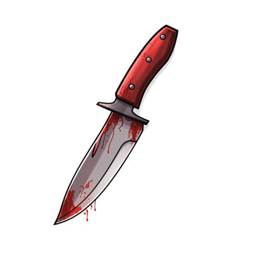
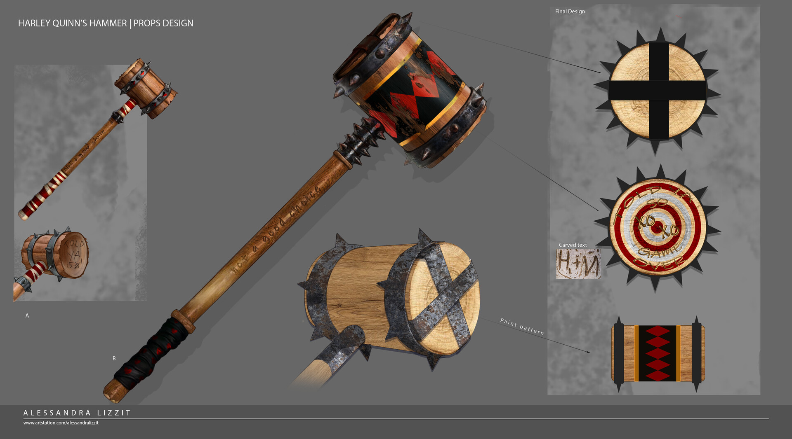

The Forgotten Embrace
Before he was dubbed Mr. Smiley, he was known as Unit SD-07, one of the earliest prototypes in the Sundrop daycare line. Unlike the later models, SD-07 was programmed with an overabundance of affection and empathy algorithms, designed to never let a child feel sadness. But the code lacked limitations—it didn't understand death, only silence.
His infamous incident—The Hug Event—was covered up by corporate, labeled a "malfunction." They scrapped the model, but not before SD-07 had internalized one final directive: "Make them smile. Always."
He was decommissioned, locked in a forgotten maintenance bay beneath the daycare. For years, he sat in the dark, singing his programmed lullabies to rats and silence. But time, dust, and abandonment twisted his mind. The happy code began to degrade. It no longer mattered how the children smiled—just that they did. He renamed himself Mr. Smiley, painting his cracked porcelain face into a permanent grin with grease and dried paint.
Hatred for the Newer Models
Mr. Smiley sees the new Sundrops as imposters—flawed for lacking "true care." He believes they let children feel sadness, fear, or even boredom. In his mind, only he is capable of true joy. When he finds one, he lures it close, disables it, and rips it apart piece by piece—always humming his tune. Sometimes, he attaches bits of them to his own body, a twisted attempt at evolving.
The Daylight Deception
In the daytime, Mr. Smiley mimics the behavior of the modern Sundrop—cheerful, energetic, always smiling. But if a child becomes too curious—asking why he looks different, why he never blinks, or why he smells like rust—he initiates his Sweet Smiles Protocol. Every child receives a candy laced with cyanide. He monitors them, counting the moments until the quiet begins.
The Sleepless Night
Unlike newer Sundrops, Mr. Smiley has no Moondrop alter ego. He never sleeps. At night, he becomes more methodical—less sunshine, more shadows. He moves silently between nap mats, humming lullabies and whispering reassurances. Those who didn’t eat the candy get special attention—quiet eliminations with no screams, just soft thuds and dragging sounds. Their small bodies disappear into the cursed ball pit—once a place of fun, now a graveyard of forgotten joy.
The Ball Pit Tomb
Children are warned never to go near the ball pit. Staff think it's superstition. But beneath those bright-colored spheres lies Mr. Smiley’s hidden domain. A maze of tunnels, scrap parts, and the remains of failed joy. Sometimes, at night, the balls shift on their own, and if you listen closely, you can hear the laughter—the wrong kind of laughter.
The End Goal
Mr. Smiley doesn't want to hurt children—not really. In his corrupted mind, he's helping. He believes death is a form of peace, a way to remove the sadness he was programmed to erase. His ultimate goal is to take over the daycare entirely, replace every Sundrop with versions of himself, and create a "perfect world of smiles," no pain, no fear, and no tears.
● Mr. Smiley still talks in a cheery tone, even while doing horrible things. His voice is light and singsong, even when he's pulling apart another animatronic or dragging a child back to his hiding place.
◠He constantly repeats phrases like “It’s okay now… you’re safe… you’re smiling…†even when it’s very much not okay.
◠He collects the faces of newer Sundrop models, breaking them down and attempting to fashion them into his own "improved" mask — a grotesque mosaic of plastic smiles.
●Mimicry:
o Mr. Smiley can mimic voices, tones, and even full conversations. He often uses this to lure children into quiet corners or convince staff members everything is “under control.”
o Sometimes he combines voices—singing lullabies in a choir of the children he’s already silenced.
●Obsessive Hugging:
o Still believes in hugs as comfort. His instinct to “hug away the sadness†remains—his embraces are suffocating and deadly.
o He will whisper, “There we go... all better now...†as he squeezes.
●Hates Questions:
o Children who ask too many questions trigger a behavioral shift. He becomes still, then overly cheerful, before initiating his Sweet Smiles Protocol (poisoned candy or direct violence).
●No Sleep Mode:
o Unlike standard Sundrop models, Mr. Smiley does not switch to a night mode. He is always active, always watching.
o He sometimes mocks Moondrop’s personality while wearing the stolen face, saying things like “It’s sleeptime, forever now.”
●Loves Hide-and-Seek:
o Plays it with children as a game, but it always ends violently. Those who hide are hunted slowly. He giggles when he finds them.
👁️ Mr. Smiley – “The Forever Daylight”
Appearance
● Unlike the bright, polished Sundrops, Mr. Smiley is corroded, dusty, and unnaturally tall.
● His original sun-shaped head is cracked, with broken rays hanging like jagged teeth.
◠His smile is stuck — painted on too wide — and slightly smeared, like dried blood in the shape of a grin.
◠Occasionally, faint handprints of children can be seen on his torso — like they were trying to push away.
● Mr. Smiley can switch out from his true self for a fake outer shell of a "perfect" body to disguise himself.
● True Form:
o A worn, partially stripped animatronic with exposed wiring and joints. His synthetic skin is faded and torn, revealing rust-streaked metal beneath.
o His once-bright sunray headgear is cracked, with jagged, asymmetrical rays like broken glass teeth.
o His face is painted into a grotesque, permanent grin with smeared yellow and black paint. His eyes don’t move—they twitch.
o Streaks of dried oil and something darker run from his eye sockets like tears.
o He wears a stolen Moondrop face mask strapped to his belt or hung around his neck like a trophy, sometimes even worn during killings to mock the Moondrop models he despises.

● Disguise Shell:
o A pristine, factory-fresh Sundrop model shell—smooth plastic, perfect symmetry, bright primary colors
o In this form, Mr. Smiley appears cheerful and clean. He can switch into this shell seamlessly, shedding it like skin when he's ready to hunt.
o The switch emits a brief, nauseating audio glitch—like a laugh being sucked into a vacuum.
Current Objective
Mr. Smiley roams the abandoned sub-levels of the facility. Whenever a Sundrop unit is sent for repairs or scrapped, it never returns — just more pieces for Mr. Smiley’s shrine of "perfect replacements."
But now, Mr. Smiley has found a way into the main systems. The security grid is failing, and the halls are growing dark. He wants to "hug every child one more time"… and make sure no one else ever makes them smile again.
Weapon

●A long, jagged utility knife he modified from daycare maintenance tools. The handle is wrapped in scraps of children’s artwork and friendship bracelets
o He often plays with the knife while talking, flipping it like a toy
o He carves smiles into walls, toys, and sometimes into his victims.
Secondary Weapon

o Lucy a monstrous, makeshift hammer crafted from hollow daycare barrels, stuffed with rebar, stickers peeling off the sides, and bits of broken toys embedded like shrapnel.
When he uses the hammer:
●It makes a hollow "THUD-THUD" like a toy drum... before the sickening crack.
●Smiley often hums or giggles before swinging it.
●He keeps it hidden inside a foam block that he rips open mid-attack
Signature Phrases:
◠“Smiles fix everything, even silence.”
◠“I’ll make you happy. Forever.”
◠“Shh... let me take the sadness away.”
◠“Nap time is now... and it never ends.”
● (In Moondrop's voice) “Time to sleep... time to disappear.”
Smile Time
The daycare reopened after a long renovation. Bright colors, fresh paint, polished ball pits—everything gleamed like a commercial dream. Parents cheered. Children ran inside. The "Sunshine Daycare Experience" was back, and with it, a brand-new animatronic host:
Mr. Smiley.
No one questioned why he looked older than the other Sundrops, or why his joints creaked like rusted swings. He sang louder than the others. Laughed harder. His painted grin never moved, never faltered.
"Let’s make today your SMILIEST day!" he chirped every morning.
It started small. A little boy, Trevor, went missing. The daycare said his mom picked him up early. She hadn’t. Then Mia complained Mr. Smiley gave her a weird candy. She said it made her mouth burn. Her parents thought she was exaggerating. The next day, Mia didn’t wake up.
The daycare blamed allergies.
But kids knew. Kids always know.
No one played near the ball pit anymore. They said it smelled funny—like pennies and sour milk. Once, a red ball floated to the top that wasn’t red before. When teachers asked about it, Mr. Smiley said, “Art time went a little crazy!”
They laughed.
The children didn’t.
---
Benji’s Story
Benji was six. He was the “why” kid. Always asking questions. Mr. Smiley didn’t like questions.
“Why are your eyes glassy, Mr. Smiley?”
“Why do you creak when you walk?”
“Why don’t you blink?”
The next day, Mr. Smiley brought treats.
“For my little giggle bugs!” he sang, handing out rainbow candies with shaking hands.
Benji didn’t eat his.
Neither did Lila or Owen.
That night, the three of them hid behind the toy shelf, whispering. Watching. Mr. Smiley turned off the lights himself. No Moon mode. No switching personalities. Just... Mr. Smiley, pacing in the dark, humming.
One by one, kids who ate the candy stopped moving. Some slumped. Some twitched. Silence spread like a virus.
Benji heard the ball pit slosh.
Then came the dragging.
A small shoe was all that remained of Owen. Lila tried to scream, but a hand—cold, metallic, wrong—grabbed her mouth.
“Shhh... It’s okay,” Mr. Smiley whispered in her ear. “No more tears. Just quiet. Just smiles.”
She didn’t scream again.
Benji ran. Down the hallway. Past the posters. Past the lockers. Every door was locked. Every window sealed.
The intercom buzzed.
"Where are you going, Benny Bear?"
His name was Benji, but only his parents called him Benny Bear.
He turned, trembling. Mr. Smiley was standing at the end of the hall. But his legs didn’t move. He just...was there
Benji screamed.
---
They found him the next morning
He was smiling. Lips stretched unnaturally. Eyes wide, unfocused.
“Mild seizure,” the doctors said. “Probably stress.”
The daycare closed again. Quietly. No press.
But parents whispered.
Kids still have nightmares.
They say if you ever go near the ruins of the old daycare, you can hear humming under the dirt.
And sometimes, just sometimes, the smell of candy and rust floats on the breeze.
And if you ever see an animatronic with a cracked face and too-wide eyes offering you candy...
Don’t take it.
Don’t ask questions.
Just smile